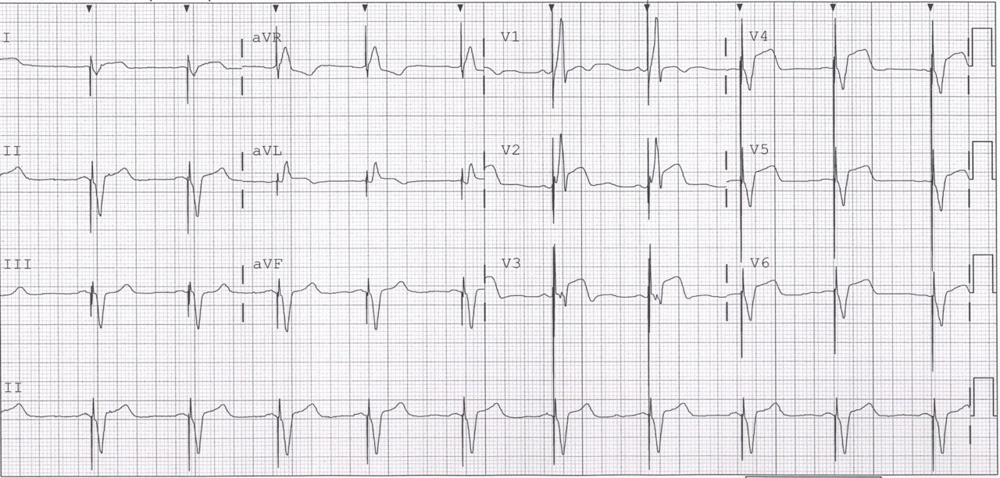
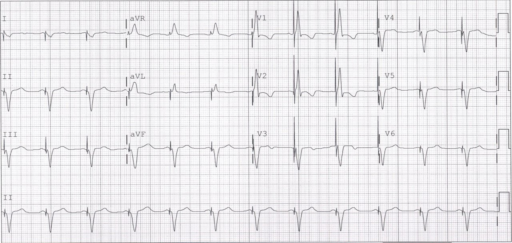
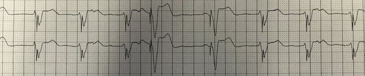
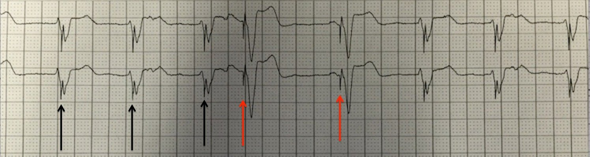
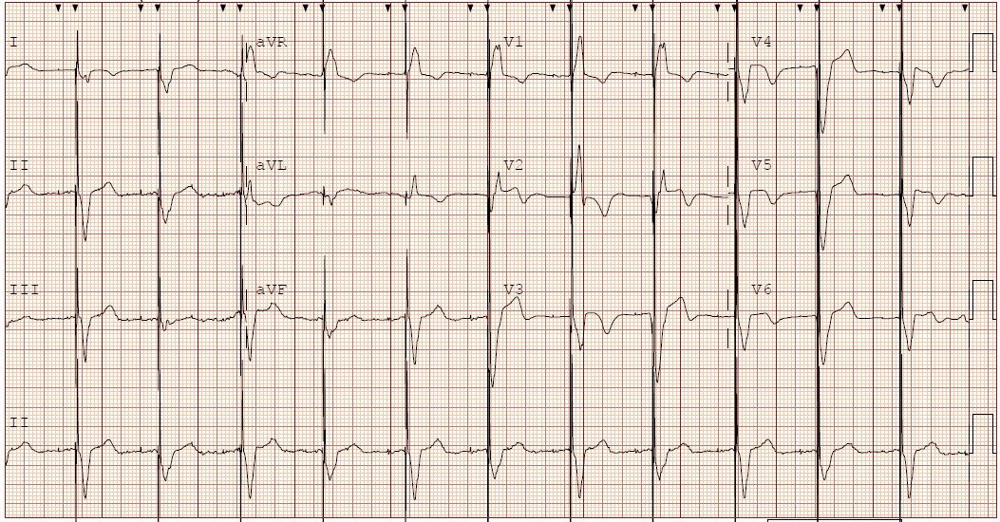
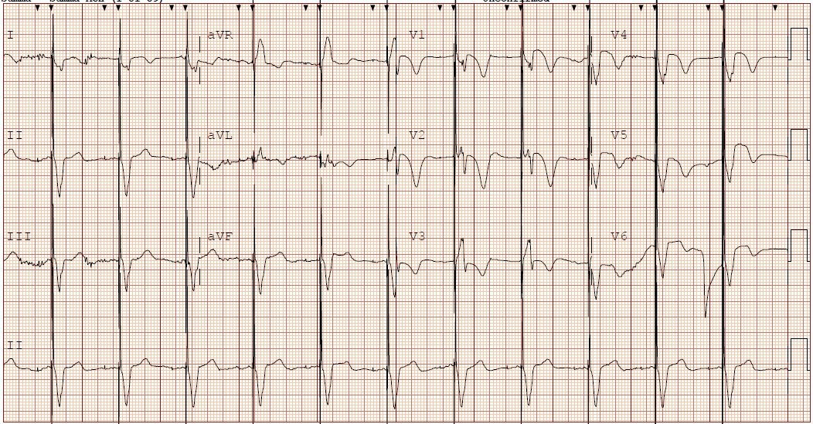

02/04/2016 — Bệnh nhân có triệu chứng thiếu máu cục bộ và máy tạo nhịp hai thất
Bản dịch tiếng Việt của bài "A Patient with Ischemic symptoms and a Biventricular Pacemaker" – Dr. Smith’s ECG Blog. Giữ nguyên toàn bộ 6 hình ảnh của bản gốc.
Ca bệnh này do Gary Giorgio thuộc Chương trình Nội trú Y học Cấp cứu Summa Health ở Akron, Ohio gửi đến. Anh ấy thường xuyên gửi những ca rất thú vị.
Bối cảnh:
Nhiều người cho rằng không thể chẩn đoán STEMI khi đang có nhịp tạo nhịp thất. Trong một khảo sát gần đây, thuộc một ca bệnh do người thầy của tôi, K. Wang, đăng trên Medscape, 48% người trả lời đã chọn đáp án “Không thể chẩn đoán nhồi máu từ các phức bộ tạo nhịp thất.”
Ca bệnh
Một phụ nữ lớn tuổi đến khám vì đau tay, đau lưng, đau hàm, vã mồ hôi và khó thở đã 6 giờ (không đau ngực!). Tiền sử bệnh động mạch vành (CAD) không rõ ràng vì
trước đây bà được chăm sóc tại một bệnh viện khác.
Đây là điện tâm đồ ban đầu của bà tại khoa cấp cứu (ED):


Ở đây, QRS dương ở V1, gợi ý thất được hoạt hóa từ trái sang phải, ít nhất là ở vách. Tạo nhịp hai thất (biventricular) (đặc biệt là “điều trị tái đồng bộ tim”) hiện nay phổ biến vì đã được chứng minh cải thiện chức năng tim ở những bệnh nhân suy tim đồng thời có thời gian QRS lớn hơn 130 ms. Máy tạo nhịp hai thất có một dây điện cực trong RV và một dây điện cực đi qua xoang vành (tĩnh mạch lớn dẫn máu từ cơ tim đổ về nhĩ phải) rồi vào một nhánh tĩnh mạch trên thượng tâm mạc của thất trái (LV). Vị trí của dây này có thể thay đổi đôi chút. Vì vậy, hình thái QRS cũng thay đổi. Tuy nhiên, nguyên tắc ngược hướng phù hợp (appropriate discordance) mà chúng tôi dùng trong blốc nhánh trái vẫn áp dụng cho nhịp tạo nhịp. Hơn nữa, dựa trên rất rất nhiều ca bệnh, tôi tin rằng tiêu chuẩn Sgarbossa cải biên theo Smith (đã được cả xây dựng lẫn thẩm định) không chỉ áp dụng cho LBBB mà còn cho cả VPR. Vì vậy, chúng ta kỳ vọng đoạn ST đi ngược hướng với phần lớn QRS và tương xứng (ST chênh lên nhỏ hơn 0.20-0.25 biên độ sóng S đi trước). Đây là một ca mà Brooks Walsh và tôi đã báo cáo.
Đây là một ca khác mà tôi đã báo cáo cùng Jeffrey Tabas và Sarah Schaaf (toàn văn).
Cả hai đều đăng trên JAMA Internal Medicine. Trên điện tâm đồ này, có cả hai dấu hiệu:
1) ST chênh lên đồng hướng (cùng hướng với QRS) ở các chuyển đạo V2 và aVL
2) ST chênh lên ngược hướng quá mức xét theo tỷ lệ ở:
a) V3 (3.5/2 = 1.75)
b) V4 (3.5/5.5 = 0.63)
c) V5 (2.5/7.0 = 0.36)
Ở ca này, có một điện tâm đồ cũ để so sánh:


Tất cả các đoạn ST đều ngược hướng phù hợp và KHÔNG mất tương xứng.
Điều này chứng minh không còn nghi ngờ gì rằng điện tâm đồ lúc đến viện thể hiện STEMI
Phòng thông tim được kích hoạt, và chỗ tắc 100% LAD đã được tái thông và đặt stent.
Bác sĩ can thiệp nhận thấy một điều rất thú vị trên màn hình theo dõi trước khi tái thông động mạch:


Đây là hình đó có chú thích bằng các mũi tên:


Các mũi tên đen chỉ những gai tạo nhịp xuất hiện SAU khi nhát bóp đã được khởi phát, tạo thành nhát hỗn hợp Lưu ý rằng các nhát hỗn hợp KHÔNG thể hiện STEMI, nhưng các nhát tạo nhịp thì CÓ thể hiện STEMI. Điều này trái với quan niệm thông thường (vốn thường không mấy sáng suốt) cho rằng không thể diễn giải thêm gì khi có VPR. Ở ca này, các nhát VPR thể hiện STEMI. Các nhát không phải VPR thì KHÔNG thể hiện.
Hơn nữa, VPR cho thấy các thay đổi tái tưới máu sau PCI:


Có sự hồi phục phần lớn ST chênh lên (cho thấy tái tưới máu) và sóng T đảo ngược (“sóng Wellens, sóng T tái tưới máu) ở V2 và V3, và cả ở một nửa số sóng tại V5 và V6, tùy theo QRS.
Như vậy, ngay cả sóng T đảo ngược cũng có thể biểu hiện khi tái tưới máu ở các ca VPR.
Đây là điện tâm đồ ngày hôm sau:


Điểm cần học:
Có thể chẩn đoán STEMI khi có VPR!!
Chúng tôi đang bắt đầu một nghiên cứu lớn về vấn đề này, tại nhiều trung tâm. Chúng ta sẽ xem tiêu chuẩn Sgarbossa cải biên áp dụng cho VPR tốt đến đâu.
Dr. Ken Grauer có một số bình luận tuyệt vời về bài này dưới đây:
Ken Grauer Nếu bạn TỪNG muốn tìm hiểu thêm về việc đôi khi có thể thấy bằng chứng xác định của STEMI cấp dù bệnh nhân đang được tạo nhịp vĩnh viễn — thì tôi khuyên bạn nên đọc trọn vẹn bài blog mới nhất của Dr. Stephen Smith (tại link ở trên). Tôi vừa gửi Bình luận sau đây tại link đó về ca bệnh sâu sắc này:
===============
KEN GRAUER đã viết như sau — Một ca TUYỆT VỜI để minh họa một loạt dấu hiệu và nhận xét quan trọng trong quá trình tiến triển của STEMI ở một bệnh nhân có máy tạo nhịp. Như Dr. Stephen Smith đã nói — Có thể chẩn đoán STEMI cấp trong một số trường hợp nhịp tạo nhịp. Ngoài việc đánh giá ngược hướng không phù hợp — điện tâm đồ thứ 1 trình bày ở đây rõ ràng biểu hiện ST chênh lên nguyên phát ở nhiều chuyển đạo, và chỉ riêng bất kỳ chuyển đạo nào trong số đó, ở một bệnh nhân lớn tuổi mới khởi phát đau ngực đáng lo ngại, cũng đủ để gợi ý mạnh mẽ STEMI cấp đang tiến triển. Chuyển đạo “ưu tiên” của tôi thường là aVL — ở ca này cho thấy ST chênh lên kín đáo nhưng rõ ràng bất thường (kèm sóng T bắt đầu đảo ngược). Gần như bất kể mức chênh bao nhiêu — hình dạng này rất đáng nghi ngờ. Biên độ QRS của phức bộ tạo nhịp ở chuyển đạo I nhỏ — nhưng ST dạng vòm (coving) và chênh lên ở chuyển đạo này (vốn “lân cận” với chuyển đạo aVL) rõ ràng là bất thường. Đánh giá đoạn ST ở các chuyển đạo ngực cho thấy hình dạng và mức chênh lên điển hình, đặc trưng của STEMI thành trước cấp, bắt đầu từ V1 và tối đa ở V3,V4. Điểm mấu chốt mà tôi muốn nhấn mạnh từ ca STEMI cấp hiển nhiên này — là hình dạng đoạn ST ở bất kỳ MỘT chuyển đạo nào kể trên, ở một người lớn tuổi mới khởi phát đau ngực và có máy tạo nhịp, cũng đủ để khơi dậy nghi ngờ của bạn về một biến cố cấp đang tiến triển.
Việc các thay đổi đoạn ST nêu trên rõ ràng là cấp tính càng trở nên hiển nhiên hơn khi xem bản ghi tạo nhịp nền của bệnh nhân (điện tâm đồ 12 chuyển đạo thứ 2 được đăng).
Tiếp theo, điện tâm đồ thứ 3 và thứ 4 được đăng là một ví dụ rất sâu sắc về việc trong một số trường hợp có thể thấy rõ quá trình tiến triển của STEMI trên các bản ghi liên tiếp. Điện thế luân phiên, như thấy trên điện tâm đồ 12 chuyển đạo thứ 3 — có thể gặp trong thiếu máu cục bộ nặng/rối loạn chức năng thất trái, cả hai điều này chắc chắn đều có mặt.
Cuối cùng — dải nhịp hấp dẫn này làm nổi bật một số dấu hiệu. Như các mũi tên ĐEN của Dr. Smith đã nhấn mạnh — 3 nhát đầu tiên là nhát hỗn hợp, vì gai tạo nhịp xuất hiện sau (chứ không phải trước) khi QRS bắt đầu. Tôi nghi rằng sự hỗn hợp ở đây có thể là giữa xung tạo nhịp với một ổ thất gia tốc (tức là AIVR) — vì AIVR là nhịp thường đi kèm STEMI đang tiến triển. Và có vẻ như các nhát hỗn hợp thứ 2 và thứ 3 (nhưng không phải nhát thứ 1) biểu hiện dẫn truyền ngược dòng lên nhĩ. Đo bằng compa gợi ý khoảng RP’ của nhát hỗn hợp thứ 3 tăng nhẹ so với nhát hỗn hợp thứ 2 — điều này có lẽ phản ánh dẫn truyền Wenckebach ngược dòng. Tôi nghi rằng chính sự dẫn truyền ngược dòng muộn hơn một chút này ở nhát hỗn hợp thứ 3 đã cho phép máy tạo nhịp nhận cảm hoạt động nhĩ và phát ra một phức bộ tạo nhịp hoàn toàn (tức là nhát thứ 4). Có thể lý do khiến ST chênh lên rất ít ở 3 nhát hỗn hợp đầu tiên này là thay đổi soi gương từ hoạt động điện đối hướng (tùy thuộc vị trí của nhịp AIVR), phần nào triệt tiêu ST chênh lên nguyên phát.
Điều đáng chú ý — một sóng P tự phát (dương) đi trước nhát thứ 5. Nhát thứ 5 này cũng là một phức bộ hỗn hợp — nhưng lần này, sự hỗn hợp là giữa dẫn truyền một phần từ sóng P xoang này với phức bộ tạo nhịp. Lưu ý rằng nhát thứ 5 này có ST chênh lên nhiều hơn so với 3 nhát hỗn hợp đầu tiên — điều này gợi ý với tôi rằng nếu chúng ta thấy được bất kỳ sóng P tự phát nào được dẫn truyền mà không bị tạo nhịp, thì chúng có thể thực sự cho thấy ST chênh lên tương tự như ở các phức bộ tạo nhịp hoàn toàn trên bản ghi thứ 1.
Cuối cùng — sự hỗn hợp giữa AIVR và tạo nhịp tái diễn ở 3 nhát cuối của dải nhịp. Lưu ý mức ST chênh lên tương tự và dẫn truyền ngược dòng tương tự ở 3 nhát hỗn hợp AIVR–tạo nhịp cuối này giống như đã thấy ở 3 nhát hỗn hợp AIVR–tạo nhịp đầu tiên. THẬT HẤP DẪN!
Xin cảm ơn Dr. Smith rất nhiều vì đã đăng bản ghi giảng dạy tuyệt vời này. May mắn là STEMI cấp đang tiến triển của bệnh nhân đã được nhận ra dù đang tạo nhịp vĩnh viễn, nhờ đó PCI đã thành công.